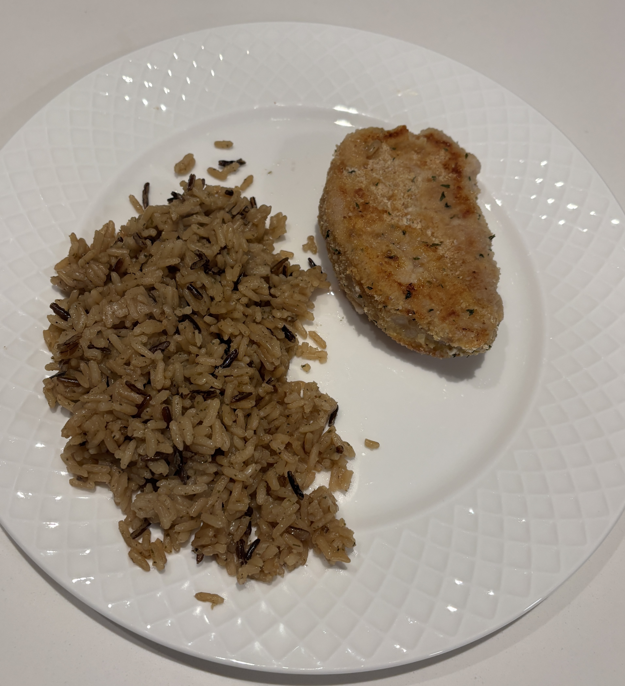

Home
Breaded Pork Chops

Ingredients
- Italian seasoned bread crumbs
- Pork Chops
- Eggs
- Flour
Steps
- Preheat the oven to 425 F
- Dab the pork chops with a paper towel to remove extra moisture.
- Dredge (lightly coat) the pork chops in flour and then dip in egg. Add porkchops to the bread crumbs and gently press the crumbs so they stick.
- Brown the pork chops in a skillet to crisp the crumbs.
- Place the pork chops evenly on parchment lined tray.
- Bake 3/4" chops (that have been browned) at 425 F for about 12-14 minutes or until the breaded pork chops reach 145 F using a meat thermometer.